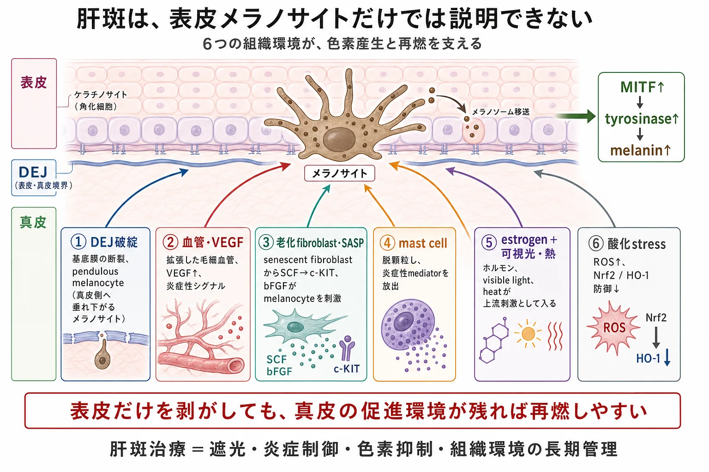
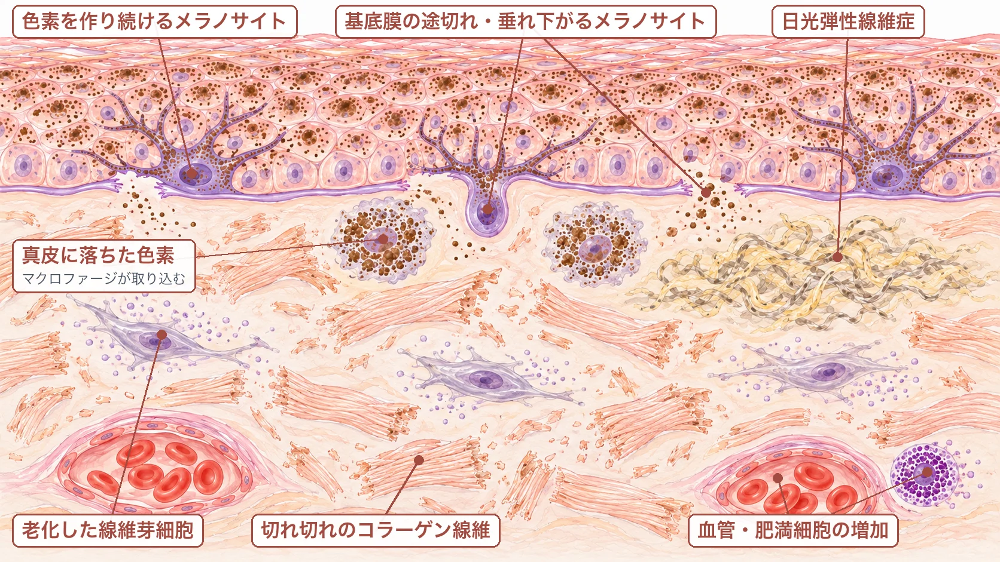
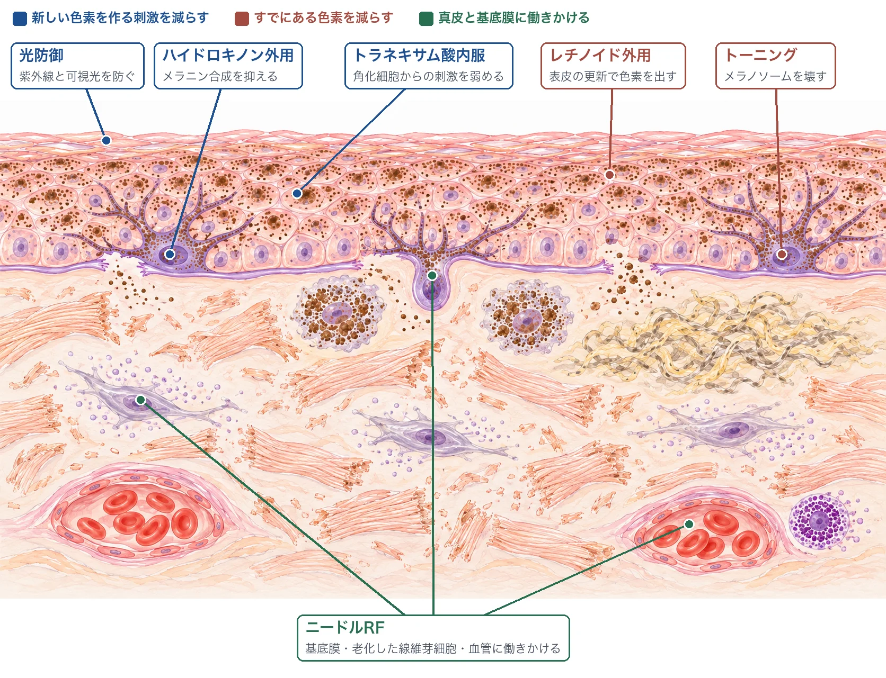
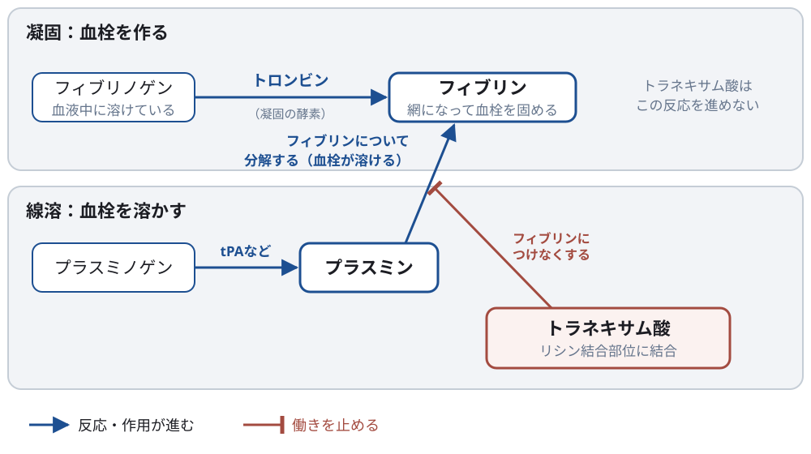

美容皮膚科 ／ 疾患・病態を細胞から理解する
肝斑メラノサイトと、色素形成を支える周囲の環境
公開 2026-10-27 ／ 最終更新 2026-10-29
肝斑は、頬部などに左右対称性の褐色斑を生じ、増悪と軽快を繰り返します。色素形成にはメラノサイトの活性に加えて、角化細胞、基底膜、真皮の線維芽細胞や血管なども関わります。
この章の一言
肝斑は、光老化した真皮と基底膜の上で、メラノサイトに色素を作らせる信号が続き、作られた色素が残りやすくなる病態です。 光、ホルモン、遺伝的な素因が重なり、その重なり方は患者ごとに異なります。
1 光老化の蓄積に、内因性の要因が重なる
肝斑の病変部は、周りの皮膚より光老化が進んでいます。紫外線で変性した弾性線維がたまる日光弾性線維症、基底膜の障害、老化した線維芽細胞、血管、肥満細胞が多く（§2）、肝斑は素因のある人に起こる光老化の病態と捉えられています。Passeron・Picardo, 2018 紫外線だけでなく可視光も、メラノサイトに作用して色素沈着を続けさせます。Regazzettiら, 2018
そこにホルモンと遺伝の要因が重なります。患者の約半数に家族歴があり、妊娠やホルモン避妊薬をきっかけに発症する例も多くみられます。Ortonneら, 2009、Handelら, 2014 病変部の表皮では、プロゲステロン受容体とエストロゲン受容体β（ERβ）が周りの皮膚より多く発現していたという生検の報告があります。ホルモンが色素形成にどう働くかは、まだ分かっていません。Tamegaら, 2015、Jangら, 2010
どの要因が強く関わるかは患者ごとに違うと考えられていますが、要因ごとに治療の反応を比べた研究はまだありません。

2 表皮と真皮のやり取りが乱れる
メラノサイトは、角化細胞、真皮の線維芽細胞、血管の細胞などから信号を受け取り、色素を作る量を調節しています（→ メラノサイトと色素形成）。肝斑では、光老化した真皮と基底膜の変化によって、このやり取りが「色素を作れ」の側へ傾き、作られた色素も残りやすくなっています。

基底膜が傷み、メラノサイトと色素が真皮側へ移る
基底膜は、表皮と真皮の境界にある薄い膜で、表皮の細胞を支え、両者を分けています。肝斑の病変では、基底膜の障害が95%（PAS染色）・83%（IV型コラーゲンの染色）に見られ、色素を持つ細胞が真皮側へ突き出していました。Torres-Álvarezら, 2011 生きた皮膚を観察した研究でも、病変部では、基底膜から真皮側へ垂れ下がるメラノサイト（pendulous melanocytes）が多く見られました。Ningら, 2025
基底膜を傷める仕組みとしては、紫外線で増える分解酵素（MMP）が基底膜の成分を分解することが、マウスで示されています。Inomataら, 2003 真皮へ落ちたメラニンはマクロファージに取り込まれ、表皮の更新では排出されません。肝斑には、色素を作り続ける反応と、作られた色素が真皮に残る変化の両方があります。
老化した線維芽細胞が、色素を作らせる信号を出す
老化した線維芽細胞は、増殖を止めても周囲への分泌を続けます（→ 細胞老化）。肝斑の病変部の真皮では、老化の目印（p16）を持つ線維芽細胞が多く見られました。Kimら, 2019 老化した線維芽細胞が出す因子の一つ sFRP2 は、肝斑や老人性色素斑の病変部で多く、培養ではメラノサイトの色素合成を促しました。Kimら, 2016 真皮の線維芽細胞が出す SCF（幹細胞因子） も病変部で増えており、メラノサイトの受容体（c-KIT）を介して色素合成を促します。Kangら, 2006
血管と肥満細胞も、メラノサイトの周りの環境を変える
病変部では血管の数・大きさも増えています。血管は赤みを作るだけでなく、内皮細胞が分泌する因子を通じて色素産生にも作用します。Kimら, 2007 肥満細胞も病変部で多く、日光弾性線維症のある部位に集まっていました。Hernández-Barreraら, 2008
詳しく：VEGFと血管内皮は、色素形成にどう関わるのか
肝斑のある女性50人で病変部と周囲の皮膚を比較した研究では、病変部で血管の数・大きさとVEGF（血管内皮増殖因子）の発現が増えていました。血管の数と色素沈着の程度にも関連がありました（Kimら, 2007）。
VEGFは血管新生を促す因子ですが、メラノサイトにも直接作用します。ヒトの培養メラノサイトにVEGF₁₆₅を加えると、VEGF受容体が活性化し、チロシナーゼ活性とメラニン産生が増えました。受容体を中和抗体で阻害すると、色素合成に関わるタンパク質の増加が抑えられました（Zhuら, 2020）。
血管内皮からメラノサイトへの別の経路として、エンドセリン1（ET-1）があります。内皮細胞とメラノサイトを一緒に培養した実験では、内皮由来のET-1がメラノサイトのエンドセリンB受容体（EDNRB）に作用し、メラニン合成を促しました。再構築皮膚でも、内皮細胞による色素増加がEDNRBの阻害で抑えられました（Regazzettiら, 2015）。メラノサイトが受け取るほかの信号との関係はメラノサイトと色素形成で扱います。
このように、肝斑病変で観察される血管の変化と、細胞実験で示された色素形成への作用が研究されています。それぞれの経路が患者の肝斑にどの程度寄与するかは、まだ明確ではありません。血管の構造と血管新生の仕組みは血管と内皮で扱います。
詳しく読む：酸化ストレスとNrf2・HO-1
Nrf2は抗酸化に関わる遺伝子の発現を促す転写因子、HO-1（ヘムオキシゲナーゼ1）はその応答に含まれる酵素です。肝斑病変の表皮では、これらの低下が報告されています。角化細胞を用いた実験では、Nrf2の低下が、細胞表面の突起である一次繊毛と、細胞の分化などを調節するHedgehogシグナルに影響し、色素産生やメラノソーム転送に関わる変化を誘導しました（PMID 38001823）。
この研究は、酸化ストレスが角化細胞を介して色素形成に関わる可能性を示します。抗酸化の基本的な仕組みは酸化ストレスと抗酸化で扱います。
3 治療は、色素を作る刺激・すでにある色素・真皮の環境に分けて考える
肝斑の治療は、どこに働きかけるかで3つに分けられます。
| 標的 | 主な治療 |
|---|---|
| 新しい色素を作る刺激を減らす | 紫外線と可視光の防御、ハイドロキノンなどの外用、トラネキサム酸内服 |
| すでにある色素を減らす | トーニング、外用・レチノイドによる表皮の色素の排出 |
| 真皮の環境と基底膜に働きかける | ニードルRF |

光防御と外用は、新しい色素を作る刺激を減らす土台です。ただ、肝斑は真皮側の変化を伴い、それだけでは改善が保てず再発しやすいため、診療では内服やデバイスを組み合わせて治療します。
光防御：紫外線に加えて可視光も防ぐ
ハイドロキノンを併用した二重盲検の比較試験では、紫外線だけを防ぐ日焼け止めより、酸化鉄を含み可視光も防ぐ製剤で、改善が大きくなりました。Castanedo-Cazaresら, 2014
外用：表皮の色素を減らすが、真皮の変化は残る
ハイドロキノンなどの外用は、表皮でのメラニン合成を抑えます（作用の詳細は美白外用の生化学）。ただし、2%ハイドロキノンを12週使った研究では、重症度スコアは下がった一方、真皮側へ垂れ下がるメラノサイトや日光弾性線維症は変わりませんでした。Ningら, 2025 表皮の色素を減らすことと、真皮の環境が変わることは別です。
トラネキサム酸内服
トラネキサム酸は、血を固める薬ではなく、できた血栓を溶けにくくする薬（抗線溶薬）です。

血液が固まるときは、トロンビンがフィブリノゲンをフィブリンに変え、フィブリンの網が血栓を作ります（凝固）。血栓が溶けるときは、プラスミンがフィブリンについて分解します（線溶）。トラネキサム酸はプラスミノゲン・プラスミンのリシン結合部位に結合してフィブリンにつけなくし、線溶を抑えます。凝固の反応そのものは進めません（トランサミン添付文書、Dunn・Goa, 1999）。
皮膚では、角化細胞からメラノサイトへの色素形成の刺激を弱めると考えられています。 培養実験では、角化細胞の培養液を加えるとメラノサイトのメラニン合成酵素（tyrosinase）の活性が上がり、トラネキサム酸はこの上昇を抑えました。メラノサイト単独では抑えず、培養液中のプラスミノゲン活性化因子（uPA）を中和すると活性化が弱まったことから、角化細胞由来のプラスミン系を介した作用と考えられます（角化細胞からメラノサイトへの信号の全体は → メラノサイトと色素形成）。Maeda・Tomita, 2007
炎症や真皮への作用は確かめられているか
プラスミンが炎症に伴う物質（アラキドン酸由来のプロスタグランジンなど）を介して色素形成を促し、トラネキサム酸がこれを抑えるという説があります。ただし、モルモットへの外用や培養細胞での断片的な結果をつないだ仮説で、一連の流れを示した研究はありません。Maeda・Naganuma, 1998
肝斑の真皮への作用は、結果が割れています。内服と外用を併用した対照のない研究（生検8例）では、血管と肥満細胞が減りました。Naら, 2013 一方、内服を評価した2つの無作為化試験の組織評価では、表皮のメラニンは減ったものの、肥満細胞やVEGFは減りませんでした。Cassianoら, 2022、Cruzら, 2026 このうち、肥満細胞を安定させるketotifenを併用した群では、基底膜の断裂、真皮側に垂れ下がるメラノサイト、日光弾性線維症が治療前より減りました。ただし、トラネキサム酸単独の群では有意に変わらず、2群の間にも差はありませんでした。Cruzら, 2026 ヒトで再現性があるのは、表皮のメラニンが減ることです。
肝斑の患者では、1日500 mgの内服で改善します。 中等症〜重症の肝斑を対象としたプラセボ対照の無作為化比較試験（44例、3か月、日焼け止めを併用）では、重症度スコア（mMASI）がトラネキサム酸群で49%、プラセボ群で18%下がりました。中止して3か月後には、改善の一部が戻っていました。Del Rosarioら, 2018 500 mg/日と1,000 mg/日、あるいは500〜1,500 mg/日の範囲で量を比べた小規模な試験では、改善に差がありませんでした。Bhattacharjeeら, 2023、Zhuら, 2019
効果が確かめられているのは肝斑です。 日光黒子（いわゆるシミ）の治療に内服を使った臨床試験は見つかっていません。日光黒子へのレーザー後に内服して炎症後色素沈着を防げるかを見た2つの無作為化試験では、発生率に差がありませんでした。Katoら, 2011、Rutninら, 2019 なお、日本の医療用トランサミンの効能・効果に肝斑は含まれず、肝斑への処方は適応外使用です。
避けたほうがよいのは、血栓症の既往やリスクがある人です。 日本の添付文書で禁忌はトロンビン投与中の患者だけですが、血栓のある患者、血栓症があらわれるおそれのある患者、術後の臥床・圧迫止血中の患者には、できた血栓を安定させるおそれがあるとして注意を求めています。腎不全では血中濃度が上がります。トランサミン添付文書
ピルとの併用は、日米で扱いが違います。 日本の添付文書には、エストロゲン製剤や経口避妊薬との併用の記載がありません。米国の過多月経の治療薬LYSTEDA（トラネキサム酸3,900 mg/日、月経中に最大5日間）では、血栓症の既往・リスクに加え、エストロゲンを含む配合ホルモン避妊薬の使用中が禁忌です。FDA添付文書 肝斑の低用量・長期内服とは条件が違いますが、併用でリスクがどの程度増えるかは明らかではありません。
リスクは、採血より問診で見積もります。 血栓のリスクが高い人を除いた肝斑の患者の研究では、1年以内の静脈血栓症に差がありませんでした（各682例）。Hernandezら, 2025 選ばれた人の短期の結果ですが、問診でリスクのある人を除けば、大きなリスクの薬ではないことを示しています。
- 問診：本人と家族の血栓症の既往、ピル・ホルモン補充療法の製剤と投与経路、妊娠・産後、喫煙、悪性腫瘍など。
- 採血：PTやAPTTなどの通常の凝固検査は、血栓のできやすさを予測しません。プロテインS欠乏症（日本人の約1%）などの体質も、症状や家族歴のない人全員に検査することは勧められていません。Miyataら, 2006、ASHガイドライン, 2023
漫然と続けず、効いているかで見直します。 肝斑であることを見極めてから始め、改善しているかを確かめながら、続ける必要性を定期的に見直します。
レーザー：トーニングは改善するが、再発と白斑に注意する
低フルエンスのQスイッチNd:YAGレーザーを繰り返し当てるトーニングは、メラニンに吸収される1064 nmの光をナノ秒の短いパルスで当て、細胞は残したまま、細胞の中の成熟したメラノソームを壊すことを狙います。ヒトの皮膚では、照射後に成熟したメラノソームの構造が崩れ、メラノサイトの樹状突起が減りました（Munら, 2011）。肝斑の生検でも、メラノソームと色素を作るタンパク質は減り、メラノサイトの数は変わりませんでした（Kimら, 2013）。作用するのは、メラノサイトの中で成熟したメラノソームと、角化細胞へのメラノソームの受け渡しです（→ メラノサイトと色素形成）。
トーニングは、肝斑の色を短期間で薄くします。ただし再発が多く、22例の比較試験では全例で再発し、3例にまだらな白斑が生じました。Wattanakraiら, 2010 系統的レビューでは、まだらな白斑は0〜17%（東アジアでは約10%）に報告され、照射の回数・フルエンス・間隔から決まる累積のエネルギーが多いほど起こりやすいとされています。Leeら, 2022 白斑の部位を生検した少数例の報告では、メラノサイトは残り、メラニンが失われていた例が多くみられます。Jangら, 2015、Ryu・Kim, 2013 機能するメラノサイトそのものが失われる尋常性白斑とは違い、照射を重ねるうちに色素を作れない状態になると考えられます。Ezzedineら, 2015 ただし、メラノサイトが減っていた症例もあり、いずれも1〜2例の報告です。Wongら, 2015 レーザーの作用の詳細はQスイッチ・ピコ秒レーザーで扱います。
ニードルRF：真皮と基底膜を標的にする
ニードルRFは、真皮に熱を与えて、基底膜や老化した線維芽細胞など、肝斑の真皮側の変化に働きかけることを狙う治療です（作用の仕組みはRFの生化学）。真皮を標的にできる治療として、美容皮膚科の診療では肝斑治療の中心として広く使われるようになっています。
示されていること
- 治療後の生検では、基底膜の厚みの回復や血管の減少が報告され、小規模な研究で老化した線維芽細胞の減少も観察されています。Parkら, 2022、Kimら, 2019
- 15人の顔の左右を無作為に割り付けた試験では、内服と外用で改善したあと、片側だけ月1回ニードルRFを続けました。完遂した11人で、RFを続けた側では改善が保たれ、続けなかった側では色が戻りました。改善を保つ維持療法としての効果を示した試験です。Han・Kang, 2024
まだ分からないこと
- 最初からニードルRFで治療した場合の効果を、対照と比べて確かめた試験はまだ少なく、研究の多くは小規模です。
- 日本人29例の後ろ向き研究では、集団全体の重症度スコアは有意に変わりませんでした（中央値は治療前後とも6）。一方、8人は30%以上改善しており、どのような患者でよく効くのかが、これからの課題です。Imaizumiら, 2026
再発を防ぐ
肝斑は色素を減らしても、光曝露などによる産生刺激が続けば再び濃くなります。また、強い刺激で炎症が生じると、PIHが加わり褐色が増えることがあります。薬剤や施術による刺激、摩擦、光曝露を含めて管理します。
この章の到達点
- 肝斑を、光老化が積み重なった皮膚に、ホルモンや遺伝的な素因が重なって起こる病態として説明できます。
- 基底膜の障害、老化した線維芽細胞、血管の変化が、メラノサイトに色素を作らせる信号を続け、色素を真皮に残すことを説明できます。
- 治療を、新しい色素を作る刺激を減らすもの、すでにある色素を減らすもの、真皮と基底膜に働きかけるものに分けて考えられます。
- トラネキサム酸内服の作用する場所（線溶）と、血栓のリスク、続けるかを見直す考え方を説明できます。
中核参考文献
- Mun JY, et al. 2011.（低フルエンスQスイッチNd:YAG後のメラノソームと樹状突起の変化）PMID 20937709.
- Kim JE, et al. Clin Exp Dermatol. 2013.（トーニング後の肝斑の組織）PMID 23397944.
- Hernández-Barrera R, et al. Solar elastosis and presence of mast cells as key features in the pathogenesis of melasma. Clin Exp Dermatol. 2008;33(3):305–308. PMID 18419607.
- Torres-Álvarez B, et al. Histochemical and immunohistochemical study in melasma: evidence of damage in the basal membrane. Am J Dermatopathol. 2011;33(3):291–295. PMID 21317614.
- Passeron T, Picardo M. Melasma, a photoaging disorder. Pigment Cell Melanoma Res. 2018;31(4):461–465. PMID 29285880.
- Regazzetti C, et al. Melanocytes sense blue light and regulate pigmentation through opsin-3. J Invest Dermatol. 2018;138(1):171–178. PMID 28842328.
- Ortonne JP, et al. A global survey of the role of ultraviolet radiation and hormonal influences in the development of melasma. J Eur Acad Dermatol Venereol. 2009;23(11):1254–1262. PMID 19486232.
- Handel AC, et al. Risk factors for facial melasma in women: a case-control study. Br J Dermatol. 2014;171(3):588–594. PMID 24749693.
- Jang YH, et al. J Eur Acad Dermatol Venereol. 2010.（肝斑のエストロゲン・プロゲステロン受容体の免疫染色、33例） PMID 20337826.
- Tamega AA, et al. Gene and protein expression of oestrogen-β and progesterone receptors in facial melasma and adjacent healthy skin in women. Int J Cosmet Sci. 2015;37(2):222–228. PMID 25439299.
- Ning X, et al. JAMA Dermatol. 2025;161:1039–1047. PMID 40802269.
- Inomata S, et al. Possible involvement of gelatinases in basement membrane damage and wrinkle formation in chronically ultraviolet B-exposed hairless mouse. J Invest Dermatol. 2003;120(1):128–134. PMID 12535209.
- Kim M, et al. Secreted frizzled-related protein 2 (sFRP2) functions as a melanogenic stimulator. J Invest Dermatol. 2016;136(1):236–244. PMID 26763443.
- Kang HY, et al. The dermal stem cell factor and c-kit are overexpressed in melasma. Br J Dermatol. 2006;154(6):1094–1099. PMID 16704639.
- Castanedo-Cazares JP, et al. Near-visible light and UV photoprotection in the treatment of melasma: a double-blind randomized trial. Photodermatol Photoimmunol Photomed. 2014;30(1):35–42. PMID 24313385.
- Wattanakrai P, et al. Low-fluence Q-switched neodymium-doped yttrium aluminum garnet (1,064 nm) laser for the treatment of facial melasma in Asians. Dermatol Surg. 2010;36(1):76–87. PMID 20298254.
- Lee YS, et al. Medicina (Kaunas). 2022;58:936.（低フルエンスQスイッチNd:YAGの系統的レビュー） PMID 35888655.
- Jang YH, Park JY, Park YJ, Kang HY. Changes in Melanin and Melanocytes in Mottled Hypopigmentation after Low-Fluence 1,064-nm Q-Switched Nd:YAG Laser Treatment for Melasma. Ann Dermatol. 2015;27:340–342. PMID 26082600.
- Ryu HJ, Kim J. J Cosmet Laser Ther. 2013. PMID 23464754.
- Wong Y, et al. Hypopigmentation Induced by Frequent Low-Fluence, Large-Spot-Size QS Nd:YAG Laser Treatments. Ann Dermatol. 2015;27:751–. PMID 26719647.
- Ezzedine K, Eleftheriadou V, Whitton M, van Geel N. Vitiligo. Lancet. 2015;386:74–84. PMID 25596811.
- Park BJ, et al. Dermatol Surg. 2022.（ニードルRF後の組織変化） PMID 34999602.
- Han HJ, Kang HY. Sci Rep. 2024;14:949.（ニードルRFによる維持療法の無作為化split-face試験） PMID 38200171.
- Imaizumi et al. Clin Cosmet Investig Dermatol. 2026.（日本人の後ろ向き研究。著者は機器メーカーと関係あり） PMID 42094857.
- Bhattacharjee R, et al. Comparative evaluation of efficacy and safety of low-dose versus high-dose oral tranexamic acid in melasma. Arch Dermatol Res. 2023;315(6):1831–1836. PMID 36757440. DOI: 10.1007/s00403-023-02549-x.
- Zhu CY, Li Y, Sun QN, Takada A, Kawada A. Eur J Dermatol. 2019;29(1):55–58. PMID 30734717. DOI: 10.1684/ejd.2018.3494.
- Del Rosario E, et al. Randomized, placebo-controlled, double-blind study of oral tranexamic acid in the treatment of moderate-to-severe melasma. J Am Acad Dermatol. 2018;78(2):363–369. PMID 28987494. DOI: 10.1016/j.jaad.2017.09.053.
- Maeda K, Tomita Y. Mechanism of the inhibitory effect of tranexamic acid on melanogenesis in cultured human melanocytes in the presence of keratinocyte-conditioned medium. J Health Sci. 2007;53(4):389–396. DOI: 10.1248/jhs.53.389.
- Hernandez T, Penny K, Culotta N. JAAD Int. 2025;24:64–66. DOI: 10.1016/j.jdin.2025.09.005. PMC12621489.
- Dunn CJ, Goa KL. Tranexamic acid: a review of its use in surgery and other indications. Drugs. 1999;57(6):1005–1032. PMID 10400410.
- Miyata T, et al. Genetic risk factors for deep vein thrombosis among Japanese. Int J Hematol. 2006;83(3):217–223. PMID 16720551.
- Middeldorp S, et al. American Society of Hematology 2023 guidelines for management of venous thromboembolism: thrombophilia testing. Blood Adv. 2023. DOI: 10.1182/bloodadvances.2023010177.
- 第一三共. トランサミン錠・カプセル・散 添付文書（2023年1月改訂）. https://pins.japic.or.jp/pdf/newPINS/00055355.pdf
- Kim M, et al. Senescent fibroblasts in melasma pathophysiology. Exp Dermatol. 2019;28:719–722. PMID 30575141. DOI: 10.1111/exd.13814.
- Kim NH, Lee AY. Oxidative Stress Induces Skin Pigmentation in Melasma by Inhibiting Hedgehog Signaling. Antioxidants. 2023;12:1969. PMID 38001823. DOI: 10.3390/antiox12111969.
- Kim EH, et al. The vascular characteristics of melasma. J Dermatol Sci. 2007;46:111–116. PMID 17363223. DOI: 10.1016/j.jdermsci.2007.01.009.
- Zhu JW, et al. Activation of VEGF receptors in response to UVB promotes cell proliferation and melanogenesis of normal human melanocytes. Exp Cell Res. 2020;387:111798. PMID 31874175. DOI: 10.1016/j.yexcr.2019.111798.
- Regazzetti C, et al. Endothelial Cells Promote Pigmentation through Endothelin Receptor B Activation. J Invest Dermatol. 2015;135:3096–3104. PMID 26308584. DOI: 10.1038/jid.2015.332.
- Maeda K, Naganuma M. J Photochem Photobiol B. 1998;47:136–141. PMID 10093913.
- Na JI, et al. J Eur Acad Dermatol Venereol. 2013;27:1035–1039. PMID 22329442.
- Cassiano DP, et al. Indian J Dermatol Venereol Leprol. 2022;88:761–770. PMID 35389028.
- Cruz ACL, et al. An Bras Dermatol. 2026;101:501336. PMID 42025113.
- Kato H, et al. Dermatol Surg. 2011;37:605–610. PMID 21457392.
- Rutnin S, et al. Lasers Surg Med. 2019;51:850–858. PMID 31302943.
- FDA. LYSTEDA prescribing information. Revised 12/2020. 添付文書.
この章の更新
- トラネキサム酸内服の節を簡潔に再構成し、機序（角化細胞由来のプラスミン系）、炎症・真皮への作用の根拠の割れ、効く範囲（日光黒子・PIHの試験）、日米添付文書の禁忌と注意、採血より問診、漫然投与の見直しを整理。§1を短くし、エストロゲン受容体βとプロゲステロン受容体の所見を追加。トーニング後の白斑の組織所見を尋常性白斑と対比して修正。治療の作用点の図を追加し、ET-1の段落とメラノサイトの章をつなげた
- 重なっていた旧§1を外して3節構成にし、肝斑の皮膚の図、再発を防ぐ小見出し、到達点を整理。§2を光老化の蓄積と内因性の要因（家族歴・ホルモン）の重なりとして書き直し、§3を表皮と真皮のやり取りの乱れ（基底膜、老化線維芽細胞とsFRP2・SCF、血管と肥満細胞）として整理。§4を標的ごとの治療の概要にし、光防御・外用・トーニングの再発と白斑・ニードルRFの根拠と限界を追加。§4にトラネキサム酸内服の節を追加。凝固と線溶の図でトラネキサム酸の作用点を示し、肝斑での臨床試験、適応の範囲、血栓リスクと問診・採血で分かること、継続の見直しを整理